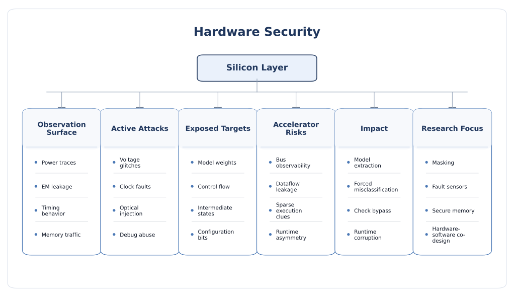

Hardware Security
Once AI is deployed in silicon, the security problem changes fundamentally. Switching activity leaks information, timing and memory traffic become observable, faults can be injected physically or electrically, and the accelerator itself becomes a target for reverse engineering, model extraction, or implementation-specific manipulation. Hardware security therefore exposes attack surfaces that are invisible in purely algorithmic evaluation.
Why hardware security changes the AI threat model
Many AI security discussions stop at the software or model layer, where the main focus is adversarial examples, poisoning, privacy leakage, or prompt manipulation. Those are important, but they do not fully describe what happens after a model is compiled, quantized, mapped to memory, scheduled on a processor, or synthesized into a custom accelerator. Hardware implementation introduces physical observables and implementation asymmetries that an attacker can exploit without ever needing to break the model mathematically.
This is the central idea of hardware security for AI: the learned function may be secure in abstraction, yet its realization in silicon can still leak information, admit fault-based manipulation, reveal intellectual property, or violate trust assumptions through memory, bus, timing, or power behavior. In other words, once AI reaches CPUs, GPUs, FPGAs, MCUs, NPUs, ASIC accelerators, or in-memory computing fabrics, security becomes a cross-layer problem involving architecture, microarchitecture, circuit behavior, packaging, and deployment context.
What belongs under hardware AI security
- Implementation leakage: power, electromagnetic, timing, cache, memory-traffic, and acoustic observables.
- Fault behavior: voltage, clock, laser, electromagnetic, thermal, or radiation-induced faults and bit flips.
- Accelerator exposure: dataflow structure, buffer usage, interconnects, reuse patterns, and layer scheduling.
- Memory and bus observability: off-chip accesses, DMA traffic, bus snooping, and shared-memory side effects.
- IP protection: protection of model parameters, architecture, proprietary mappings, and generated hardware configurations.
- Secure execution: enclaves, trusted execution, authenticated boot, attestation, and run-time tamper sensing.
Why this matters in practice
AI hardware is often deployed where cost, power, latency, and privacy matter: phones, edge devices, vehicles, medical equipment, industrial controllers, robotics, and custom inference platforms. These environments frequently give attackers some degree of proximity, persistence, or physical interaction. A query-only adversary is no longer the only concern; the attacker may probe rails, observe EM emissions, inject glitches, monitor memory traffic, or recover functionality from a generated bitstream.
Core security goals at the hardware layer
- Confidentiality: protect model weights, architecture, intermediate activations, prompts, and sensitive input data.
- Integrity: prevent fault-induced misclassification, malicious reconfiguration, or silent corruption of computations.
- Availability: preserve service under fault stress, abusive workloads, or repeated perturbation attempts.
- IP protection: prevent reverse engineering of accelerator structure, mapping strategies, and deployed models.
- Attestation and trust: establish whether the platform, firmware, and execution context are genuine and untampered.
- Cross-layer assurance: connect model behavior with how the architecture, memory system, and circuits actually execute it.

Threat model and hardware-specific attack surface
A rigorous hardware-AI threat model must specify where the attacker is positioned, how much physical access they have, which implementation details are observable, and what objective they pursue. Hardware attackers can be local or near-local, but that does not mean they are unrealistic. In embedded, edge, industrial, automotive, defense, or consumer contexts, physical proximity is often part of the expected deployment model.
Attacker positions
- Near-field observer: measures power, EM, timing, cache activity, or externally visible memory behavior.
- Board-level adversary: accesses debug ports, buses, clocks, supply rails, or removable storage.
- Physical injector: induces glitches or transient faults using voltage, clock, EM, laser, temperature, or radiation methods.
- Co-resident adversary: shares compute resources and exploits microarchitectural channels such as cache or memory contention.
- Reverse engineer: studies binaries, bitstreams, runtime traces, packaging, or layout clues to recover the accelerator or model structure.
- Malicious integrator or insider: modifies firmware, reconfiguration files, calibration parameters, or design-for-test paths.
Attacker goals
- Model extraction: recover weights, architecture, hyperparameters, or hardware-generated IP.
- Input or activation leakage: infer sensitive user data, intermediate states, or prompts from physical observables.
- Misclassification or degradation: inject faults to alter outputs, confidence, or control decisions.
- Implementation fingerprinting: recover mapping, dataflow, reuse strategy, or layer structure of the deployed accelerator.
- Privilege escalation: abuse debug features, firmware interfaces, or reconfiguration paths.
- Reliability-to-security crossover: exploit soft errors or transient faults that were treated as only a reliability problem.
Major hardware threat classes
1. Side-channel leakage and reverse engineering
Side-channel attacks exploit information unintentionally leaked during computation. In AI hardware, this can include power traces, EM radiation, timing variations, cache activity, memory-access patterns, and data-dependent switching behavior. These leakages may reveal not only secret keys, as in classical cryptography, but also model parameters, input classes, architecture choices, layer ordering, activation sparsity, and accelerator configuration.
- Power and EM analysis: infer weights, inputs, layer execution, or data-dependent activity.
- Timing and cache channels: exploit latency or shared-resource effects to recover model behavior or tokens.
- Memory-pattern leakage: observe off-chip transfers or buffer refills to infer layer shapes and reuse strategies.
- Dataflow reverse engineering: exploit accelerator-specific regularity to recover hardware configuration and model structure.
2. Fault injection and bit-flip attacks
Fault attacks deliberately disturb computation so the system produces a wrong result or leaks extra information. In AI hardware, the attacker may target weights, activations, control logic, memory cells, or timing paths. The goal may be broad degradation, targeted misclassification, confidence manipulation, or extraction through faulty behavior. Because many accelerators use quantization, reduced precision, compression, or approximate arithmetic, small perturbations can have highly non-uniform effects.
- Voltage and clock glitches: induce timing violations and transient logic errors.
- Electromagnetic or laser injection: create localized disturbances in registers, SRAM, or control paths.
- Bit-flip attacks: corrupt stored parameters or intermediate states, sometimes with targeted search over the most sensitive bits.
- Soft-error crossover: naturally occurring faults and maliciously induced faults may lead to similar observable failures.
3. Bus, memory, and off-chip traffic observation
AI accelerators often move data between on-chip buffers and external DRAM. These transfers can reveal layer boundaries, tensor sizes, batching strategy, reuse patterns, or sensitive inputs. Even when weights are encrypted at rest, the execution-time movement of data may still be visible. This is especially important when model capacity exceeds on-chip memory and repeated off-chip transfers become a structural signature of the workload.
- External memory traces can leak architectural metadata without revealing raw values directly.
- DMA and bus activity may expose when specific layers or branches execute.
- Compression, sparsity, and dynamic activation patterns can unintentionally strengthen distinguishability.
4. Microarchitectural and shared-hardware attacks
Not all hardware attacks require probes or lab equipment. Co-resident attackers on shared CPUs or accelerators can exploit cache behavior, memory contention, or resource sharing to infer tokens, embeddings, or model-dependent execution signals. This is important in cloud and virtualized deployments, where AI confidentiality can depend on strong isolation of shared hardware resources.
5. Accelerator-specific leakage
AI hardware is highly structured. Systolic arrays, dataflow engines, sparsity-aware accelerators, analog crossbars, binary neural-network engines, and FPGA-generated datapaths all have recurring patterns that make them efficient, but also easier to fingerprint. The more regular and optimized the implementation, the easier it can be for an attacker to correlate physical traces with layer execution or model structure.
- Data reuse patterns can reveal convolutional layer structure or sequence-processing behavior.
- Sparsity and pruning may create distinguishable switching signatures.
- Quantized datapaths may amplify bit-level sensitivity and enable targeted FI campaigns.
- FPGA bitstreams and generated accelerators can leak architectural choices even when the original model file is unavailable.
6. Debug, test, and configuration abuse
Practical systems often expose debug interfaces, firmware update paths, JTAG-like access, reconfiguration channels, scan logic, or test modes. These are essential for development and maintenance but can become attack paths if left enabled, weakly authenticated, or poorly segmented from production operation. In AI devices, such interfaces may expose model storage, layer configuration, profiling counters, or other sensitive runtime artifacts.
7. Hardware Trojan and supply-chain concerns
The AI hardware stack includes IP blocks, third-party accelerators, firmware, toolchains, generated RTL, packaging, and manufacturing steps. This introduces supply-chain risks such as malicious modifications, hidden triggers, counterfeit components, compromised IP, or trust gaps in outsourced integration. For AI accelerators, such modifications may selectively leak activations, weaken isolation, disable sensors, or alter model behavior only under specific workloads.
8. Reliability, aging, and environmental stress as security amplifiers
Security and reliability are deeply linked in hardware AI. Voltage droop, temperature variation, NBTI aging, SRAM instability, soft errors, and process variation can all shape how vulnerable an implementation is to induced faults or timing-based exploitation. A system designed only for typical-case accuracy may therefore fail unexpectedly under real environmental conditions, even without a sophisticated attacker.
9. Emerging-hardware-specific threats
Emerging substrates such as memristive in-memory computing, analog accelerators, neuromorphic hardware, flexible electronics, or near-sensor AI introduce additional attack surfaces. Non-ideal device physics, endurance drift, conductance variation, and analog observability may create new leakage modes or new fault sensitivities. These platforms offer compelling efficiency benefits, but they must be evaluated under hardware-native threat models, not only under digital assumptions.
Countermeasures and cross-layer design principles
Hardware defense for AI is inherently layered. There is no universal fix because the attacker may target different parts of the stack: the circuit, the memory hierarchy, the control path, the toolchain, or the workload itself. Strong designs therefore combine circuit-level hardening, architectural isolation, secure storage, attestation, run-time detection, and workload-aware co-design.
1. Leakage reduction: masking, hiding, and balancing
- Masking: decorrelate sensitive internal values from directly observable physical signals.
- Hiding and balancing: reduce data-dependent variation in timing, switching activity, or memory traffic.
- Constant-pattern execution: minimize distinguishability of different layers, classes, or branches.
- Noise and randomized scheduling: complicate trace alignment and signal recovery, though often with overhead.
- Secure memory movement: reduce or regularize off-chip transfers that reveal architecture or inputs.
Classical hiding and masking ideas from cryptographic hardware are useful here, but AI workloads are larger, more data-dependent, and more structurally diverse. Defenses must therefore be adapted rather than copied directly.
2. Fault tolerance and integrity hardening
- Redundancy: temporal, spatial, or algorithmic redundancy can detect or mask transient computation errors.
- Error detection and correction: use parity, ECC, or protected storage for memories and selected control paths.
- Sensitive-bit protection: protect the most fault-critical weights, indices, or control registers first.
- Consistency checking: compare predicted outputs, range checks, or invariant checks for high-risk deployments.
- Graceful degradation: prefer bounded accuracy loss over silent catastrophic failure under stress.
3. Secure memory and bus architecture
- Encrypt stored models and protect keys using hardware roots of trust where appropriate.
- Authenticate model binaries, firmware, and configuration files before execution.
- Reduce external-memory dependence through buffer-aware mapping when security permits.
- Partition sensitive traffic and isolate DMA paths used by high-value workloads.
- Use memory-protection units, IOMMU policy, and access segmentation to limit unintended exposure.
4. Trusted execution, attestation, and secure boot
- Secure boot: ensure only authenticated firmware, kernels, and accelerators are launched.
- Attestation: prove to remote parties what software and configuration are actually running.
- Trusted execution: protect data and code during computation using TEEs or confidential-computing techniques where applicable.
- Measured updates: make model, firmware, and policy changes auditable and integrity checked.
These techniques are increasingly relevant when sensitive AI inference or model IP must run on shared or semi-trusted infrastructure, but they are not a complete answer to leakage, driver risk, or accelerator-specific channels.
5. Sensorization and runtime attack detection
- Use voltage, clock, temperature, or EM anomaly sensors to detect likely injection attempts.
- Track low-level performance and activity counters to detect abnormal execution signatures.
- Correlate model behavior with run-time telemetry for attack detection and forensics.
- Trigger safe fallback, throttling, reset, or quarantine under suspicious conditions.
6. Architectural randomization and workload-aware obfuscation
- Randomize data placement, scheduling, or mapping to reduce deterministic trace signatures.
- Obfuscate accelerator configuration or generated bitstreams where practical.
- Use dataflow-aware countermeasures that understand which layers leak most strongly.
- Exploit workload diversity to avoid perfectly repeatable side-channel structure.
7. Protecting debug and lifecycle interfaces
- Disable or lock development interfaces in production.
- Authenticate firmware, reconfiguration, and test commands.
- Separate profiling or introspection access from normal inference operation.
- Audit maintenance interfaces because operational convenience often becomes a real attack path.
8. Hardware-software-model co-design
- Choose model architectures with awareness of hardware leakage and fault sensitivity.
- Evaluate pruning, quantization, compression, and sparsity not only for efficiency but also for security implications.
- Map critical layers and sensitive data to more protected resources.
- Use system-level threat modeling that includes model behavior, deployment setting, and physical attacker capability together.
This is especially important because some optimization choices improve efficiency while worsening leakability or fault sensitivity. Security should therefore be treated as a design metric, not a late-stage patch.
Open research challenges and future directions
Hardware AI security is advancing quickly, but the field still has major gaps between published attack demonstrations, realistic deployment assumptions, and deployable defenses. Many proposed defenses remain expensive, narrowly targeted, or difficult to integrate into fast-moving AI hardware design flows.
1. Bridging algorithmic AI security and implementation reality
Much AI security work still assumes a software abstraction of the model, while much hardware security work does not fully incorporate workload semantics, model behavior, or deployment constraints. The field needs better cross-layer evaluation that connects learned functionality with actual implementation leakage, memory motion, and fault sensitivity.
2. Realistic attacker models for deployed accelerators
Existing papers often assume either very weak remote attackers or very strong laboratory attackers. Real systems sit somewhere in between: attackers may have intermittent access, partial knowledge, noisy traces, shared hardware, or limited fault capability. More deployment-realistic models are needed, especially for embedded and edge AI.
3. Security-efficiency trade-offs remain poorly quantified
Hardware AI is highly optimized for energy, area, throughput, and latency. Side-channel protection, redundancy, constant-time behavior, or secure memory movement can be expensive. The community still lacks standardized ways to compare security benefit against PPA cost across different accelerator classes.
4. Leakage models for modern AI hardware are still immature
We understand classical cryptographic leakage relatively well, but AI workloads have richer, more dynamic structures. Activations are sparse, control flow may be data dependent, and memory behavior often dominates. Better leakage models are needed for systolic arrays, sparse engines, analog accelerators, and generated FPGA dataflow designs.
5. Reliability and security are still too often separated
Soft errors, process variation, temperature effects, and aging are often studied as reliability topics, whereas deliberate glitches and FI are studied as security topics. In real systems the two interact. A future research direction is unified methodology for reliability-security co-analysis of AI accelerators.
6. Emerging AI hardware lacks mature security benchmarks
Neuromorphic, analog, in-memory, and flexible electronic AI platforms are still evaluated mostly for energy and accuracy. Their security posture under side-channel analysis, invasive probing, parameter drift, and analog fault injection remains much less standardized.
7. Confidential execution for accelerator-heavy AI still has gaps
Trusted execution and confidential computing are promising for protecting data in use, but end-to-end assurance remains difficult when drivers, DMA, firmware, interconnects, and heterogeneous accelerators all belong to the true trusted-computing base. Stronger attestation and lower-overhead secure execution paths are needed.
8. IP protection and model protection are converging
In AI hardware, stealing the accelerator structure, model parameters, deployment graph, or mapping strategy may all be economically valuable. Future work should treat reverse engineering, model theft, and hardware IP theft as related problems rather than separate silos.
9. System-level evaluation is still limited
Many papers report attack success against a layer, a buffer, or a narrow benchmark model. What matters in practice is the end-to-end outcome: can the attacker recover a deployed model, infer a user query, trigger unsafe behavior, or violate a product trust boundary? Better full-stack benchmarks are needed.
10. Future direction
- Cross-layer frameworks linking AI models, compilers, architectures, circuits, and deployment conditions.
- Leakage-aware and fault-aware mapping of DNNs, transformers, and multimodal workloads.
- Better runtime sensing and anomaly detection for physical attacks on AI accelerators.
- Security evaluation for emerging substrates such as analog, in-memory, neuromorphic, and flexible electronics.
- More realistic confidential-computing support for accelerator-centric AI execution.
- Unified benchmarks for hardware leakage, FI resilience, IP protection, and downstream model impact.
Selected readings and frameworks
The references below give a solid entry point into hardware AI security, combining official frameworks with hardware-oriented surveys and representative research directions.
- NIST AI 100-2 (2025): Adversarial Machine Learning Taxonomy and Terminology
- NIST AI Risk Management Framework (AI RMF)
- NCCoE: Adversarial Machine Learning
- MITRE ATLAS
- MITRE SAFE-AI: A Framework for Securing AI-Enabled Systems
- A Survey on Hardware Security of DNN Models and Accelerators
- A Survey on Side-Channel-based Reverse Engineering Attacks on Deep Neural Networks
- A Survey on Failure Analysis and Fault Injection in AI Systems
- A Survey on Impact of Transient Faults on BNN Inference Accelerators
- Side-Channel Extraction of Dataflow AI Accelerator Configurations
- ScaAR: Real-world Edge Neural Network Implementations Leak User Interactions
- NVIDIA Confidential Computing for AI Workloads